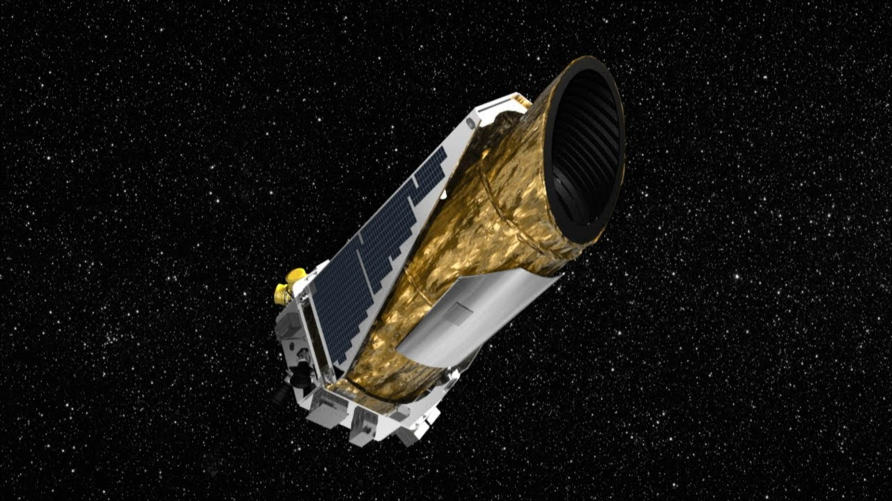
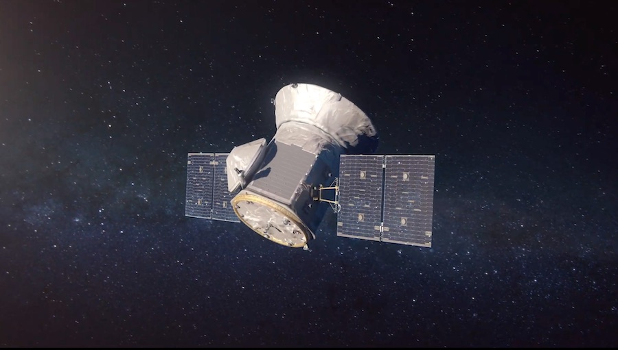
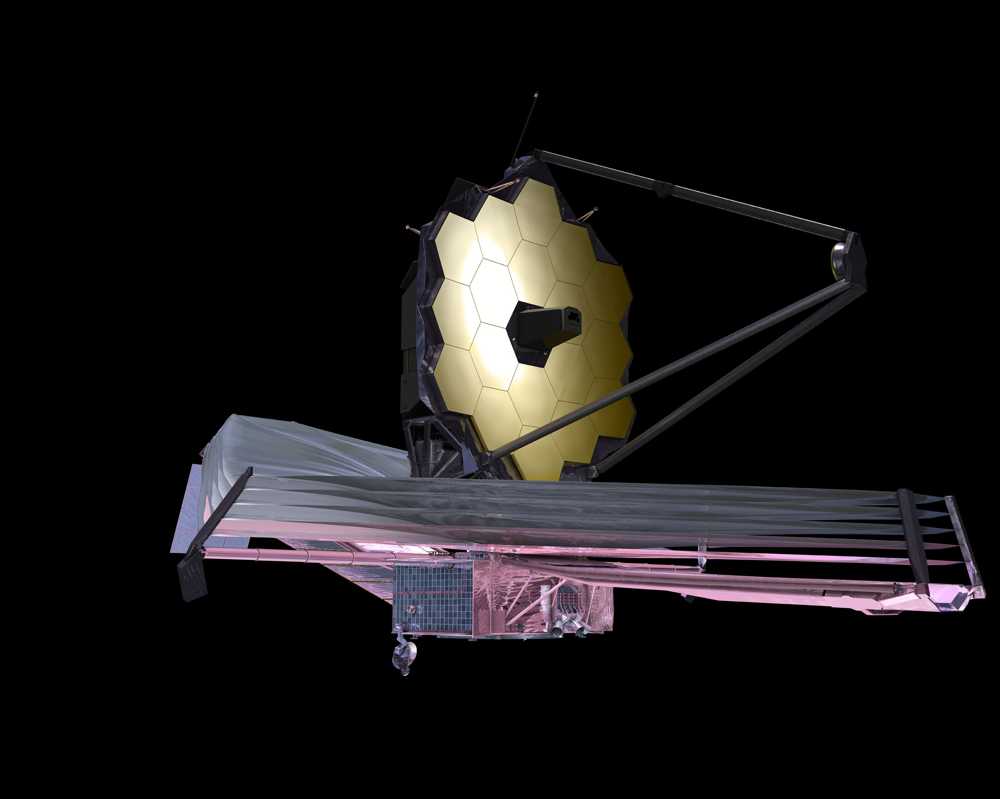

An Interactive Exploration of the Cosmos
Assaf Shaked · Juliana Merege · Yankit Kukreja · Colin Gross
Michael Cebral · Raul Mariani · Vanessa Van Decker
Scroll to Explore
Exploring the stars with AI to find our next home.
Are you excited to begin?
Launched in 2009 and finished in 2017, NASA´s Kepler mission revolutionized exoplanet discovery. The Kepler database holds brightness data for about 150,000 stars; by analysing this data, you and scientists can spot tiny dips, called "transits" in the stars' light curves, which suggest the presence of exoplanets orbiting those stars.
The Transiting Exoplanet Survey Satellite (TESS), launched in 2018, performed high-precision photometry of over 200,000 stars during its two-year primary mission. Like Kepler, TESS searched for exoplanets using the transit method — but it expanded coverage to the entire sky, discovering thousands of new stars and recording their detailed light curves.
This powerful technique detects exoplanets by measuring the minuscule dip in a star's brightness as a planet crosses in front of it. The amount of dimming reveals the planet's size relative to its star, while the time between transits tells us its orbital period. This data is crucial for identifying potentially habitable worlds.

As the successor to Hubble, the James Webb Space Telescope is the most powerful and complex space observatory ever built. Its massive, gold-coated mirror and advanced infrared instruments allow it to peer deeper into the cosmos than ever before, capturing the faint light from the very first stars and galaxies, and analyzing the atmospheres of distant exoplanets for signs of life.
When an exoplanet passes in front of its star, some starlight filters through the planet's atmosphere. The James Webb Space Telescope analyzes this light, looking for tell-tale signs of gases like water, methane, and carbon dioxide, which absorb light at specific wavelengths. These chemical fingerprints reveal the secrets of alien atmospheres and are a key step in the search for habitable worlds.